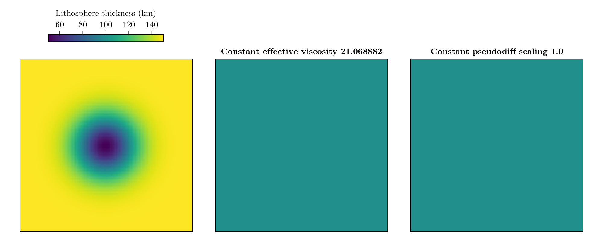
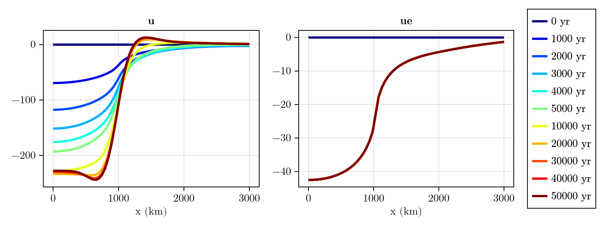
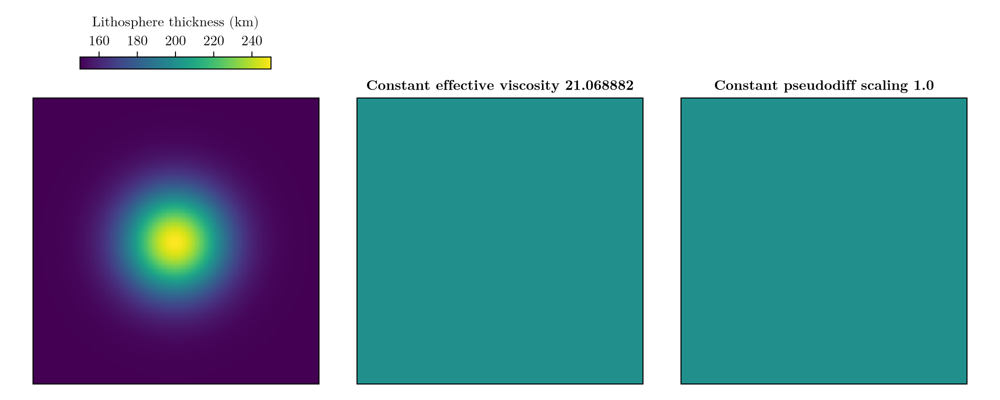
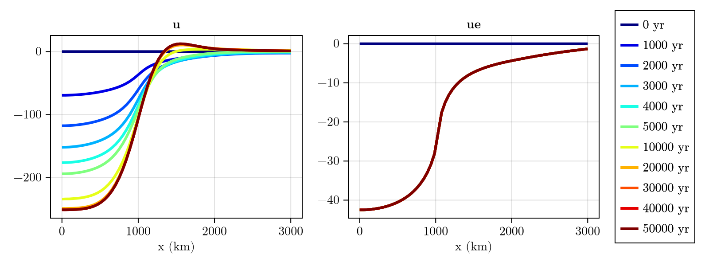
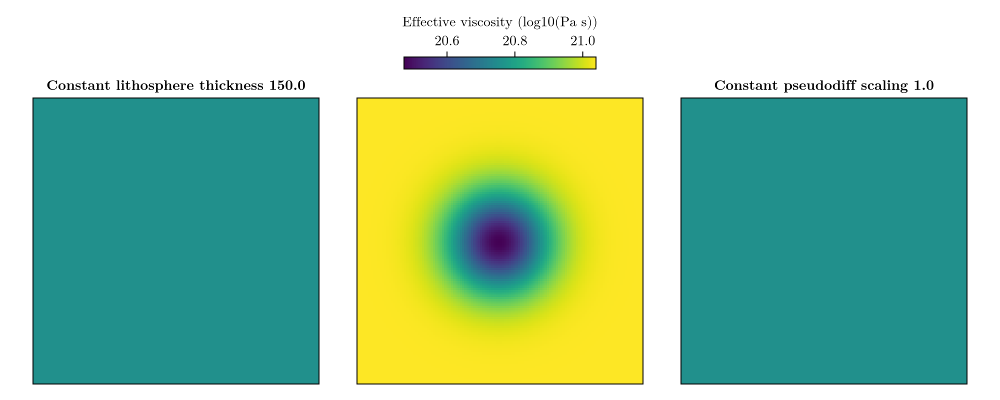
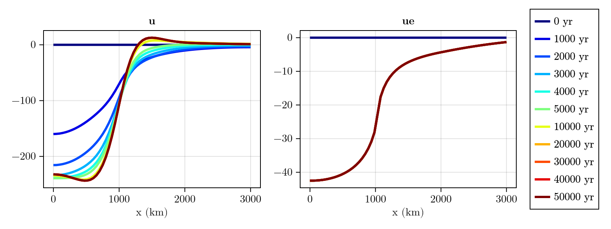
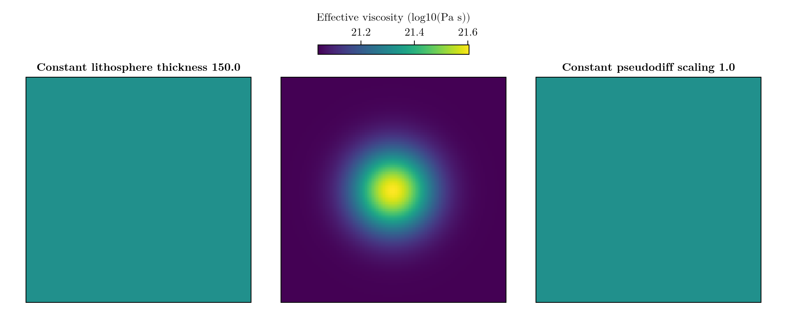
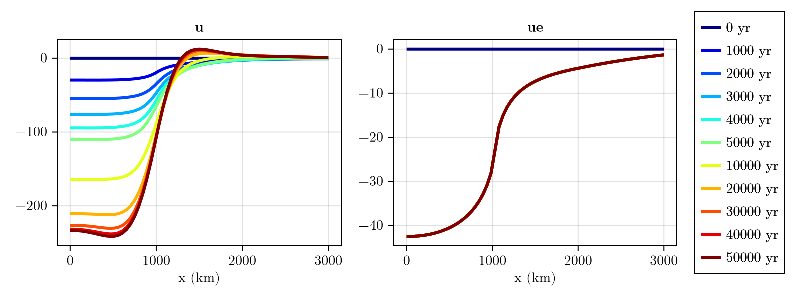

3D GIA benchmark
After comparing our results against analytical and 1D numerical solution, the obvious next step is to compare our results against 3D numerical solutions, where the lithospheric thickness and the mantle viscosity vary in $x$ and $y$. We reproduce Test 3 from Swierczek-Jereczek et al. (2024), where a 1D Earth structure is perturbed by a Gaussian field in 4 different ways:
- A reduction of the lithospheric thickness from $T = 150 \, \mathrm{km}$ (at the domain margin) to $T = 50 \, \mathrm{km}$ (at the domain center).
- An increase of the lithospheric thickness from $T = 150 \, \mathrm{km}$ (at the domain margin) to $T = 250 \, \mathrm{km}$ (at the domain center).
- A reduction of the mantle viscosity from $\eta = 10^{21} \, \mathrm{Pa \, s}$ (at the domain margin) to $\eta = 10^{20} \, \mathrm{Pa \, s}$ (at the domain center).
- An increase of the mantle viscosity from $\eta = 10^{21} \, \mathrm{Pa \, s}$ (at the domain margin) to $\eta = 10^{22} \, \mathrm{Pa \, s}$ (at the domain center).
The ice load used as a forcing is the same as in the analytical example and the sea level computation is turned off to isolate the effect of a 3D Earth structure on the deformational response.
Case 1: Negative anomaly in lithospheric thickness
using FastIsostasy, CairoMakie, LinearAlgebra
W, n = 3f6, 7
domain = RegionalDomain(W, n)
H_ice_0 = zeros(domain)
H_ice_1 = 1f3 .* (domain.R .< 1f6)
t_ice = [0, 1f-8, 50f3]
H_ice = [H_ice_0, H_ice_1, H_ice_1]
it = TimeInterpolatedIceThickness(t_ice, H_ice, domain)
bcs = BoundaryConditions(domain, ice_thickness = it)
sealevel = RegionalSeaLevel()
sigma = diagm([(W/4)^2, (W/4)^2])
thinning_lithosphere = generate_gaussian_field(domain, 150f3, [0f0, 0], -100f3, sigma)
solidearth = SolidEarth(
domain,
layer_boundaries = thinning_lithosphere,
layer_viscosities = [1f21],
)
fig = plot_earth(domain, solidearth)
Now let's see what result we obtain:
nout = NativeOutput(vars = [:u, :ue], t = vcat(0, 1f3:1f3:4f3, 5f3, 10f3:10f3:50f3))
sim1 = Simulation(domain, bcs, sealevel, solidearth, (0, 50f3); nout = nout)
run!(sim1)
fig = plot_transect(sim1, [:u, :ue])
This is very similar to the result obtained by Seakon (3D GIA model) as presented in Swierczek-Jereczek et al. (2024) (Fig. 8.a)! Let's dig into the other cases:
Case 2: Positive anomaly in lithospheric thickness
thickenning_lithosphere = generate_gaussian_field(domain, 150f3, [0f0, 0], 100f3, sigma)
solidearth = SolidEarth(
domain,
layer_boundaries = thickenning_lithosphere,
layer_viscosities = [1f21],
)
fig = plot_earth(domain, solidearth)
Which is basically the opposite of Case 1!
Now let's see what result we obtain:
sim2 = Simulation(domain, bcs, sealevel, solidearth, (0, 50f3); nout = nout)
run!(sim2)
fig = plot_transect(sim2, [:u, :ue])
It looks like a thicker lithosphere prevents flexure! This tends to "spread" the deformation by creating a higher lateral coupling between neighbouring cells. In comparison, a thin lithosphere makes the displacement more localized, as the flexural rigidity is lower and the cells are more decoupled from each other.
Comparing these results to those of Seakon gives a good match (Swierczek-Jereczek et al. (2024), Fig. 8.b). Now let's dive into cases of laterally-varying mantle viscosities.
Case 3: Negative anomaly in mantle viscosity
log10visc = generate_gaussian_field(domain, 21f0, [0f0, 0], -1f0, sigma)
solidearth = SolidEarth(
domain,
layer_boundaries = [150f3],
layer_viscosities = reshape(10 .^ log10visc, domain.nx, domain.ny, 1),
calibration = SeakonCalibration(),
)
fig = plot_earth(domain, solidearth)
Here we used SeakonCalibration as calibration passed to SolidEarth. As described in Appendix C of Swierczek-Jereczek et al. (2024), this allows to include the effect of a laterally varying shear modulus on the effective viscosity, which yields about $\eta = 10^{20.5} \, \mathrm{Pa \, s}$ instead of the expected $\eta = 10^{20} \, \mathrm{Pa \, s}$.
sim3 = Simulation(domain, bcs, sealevel, solidearth, (0, 50f3); nout = nout)
run!(sim3)
fig = plot_transect(sim3, [:u, :ue])
As expected, the displacement takes place much faster than in the previous cases. Comparing these results to those of Seakon gives a good match (Swierczek-Jereczek et al. (2024), Fig. 8.c).
Case 4: Positive anomaly in mantle viscosity
We now perform the opposite viscosity perturbation to Case 3:
log10visc = generate_gaussian_field(domain, 21f0, [0f0, 0], 1f0, sigma)
solidearth = SolidEarth(
domain,
layer_boundaries = [150f3],
layer_viscosities = reshape(10 .^ log10visc, domain.nx, domain.ny, 1),
calibration = SeakonCalibration(),
)
fig = plot_earth(domain, solidearth)
Due to the applied calibration, the effective viscosity yields about $\eta = 10^{21.5} \, \mathrm{Pa \, s}$ instead of the expected $\eta = 10^{22} \, \mathrm{Pa \, s}$. This means that the calibration tends to reduce the difference between the viscosity and the reference one, set in SeakonCalibration.
sim4 = Simulation(domain, bcs, sealevel, solidearth, (0, 50f3); nout = nout)
run!(sim4)
fig = plot_transect(sim4, [:u, :ue])
As expected, the displacement takes place much slower than in the previous cases. Comparing these results to those of Seakon gives a good match (Swierczek-Jereczek et al. (2024), Fig. 8.d).
FastIsostasy performs these runs much faster than 3D GIA models (several orders of magnitude). For instance:
for sim in (sim1, sim2, sim3, sim4)
println("Computation time (s): $(sim.timer.t_computation[end])")
endComputation time (s): 2.0182228
Computation time (s): 4.6125526
Computation time (s): 4.454689
Computation time (s): 1.358921Copy-pastable code
using FastIsostasy, CairoMakie, LinearAlgebra
W, n = 3f6, 7
domain = RegionalDomain(W, n)
H_ice_1 = 1f3 .* (domain.R .< 1f6)
it = TimeInterpolatedIceThickness([0, 1f-8, 50f3],
[zeros(domain), H_ice_1, H_ice_1], domain)
bcs = BoundaryConditions(domain, ice_thickness = it)
nout = NativeOutput(vars = [:u, :ue], t = vcat(0, 1f3:1f3:4f3, 5f3, 10f3:10f3:50f3))
sigma = diagm([(W/4)^2, (W/4)^2])
# swap this block for any of the four cases:
# thickness anomaly: layer_boundaries = generate_gaussian_field(domain, 150f3, [0f0, 0], +-100f3, sigma)
# viscosity anomaly: layer_viscosities = reshape(10 .^ log10visc, domain.nx, domain.ny, 1)
log10visc = generate_gaussian_field(domain, 21f0, [0f0, 0], -1f0, sigma)
solidearth = SolidEarth(domain,
layer_boundaries = [150f3],
layer_viscosities = reshape(10 .^ log10visc, domain.nx, domain.ny, 1),
calibration = SeakonCalibration())
sim = Simulation(domain, bcs, RegionalSeaLevel(), solidearth, (0, 50f3); nout = nout)
run!(sim)
plot_transect(sim, [:u, :ue])